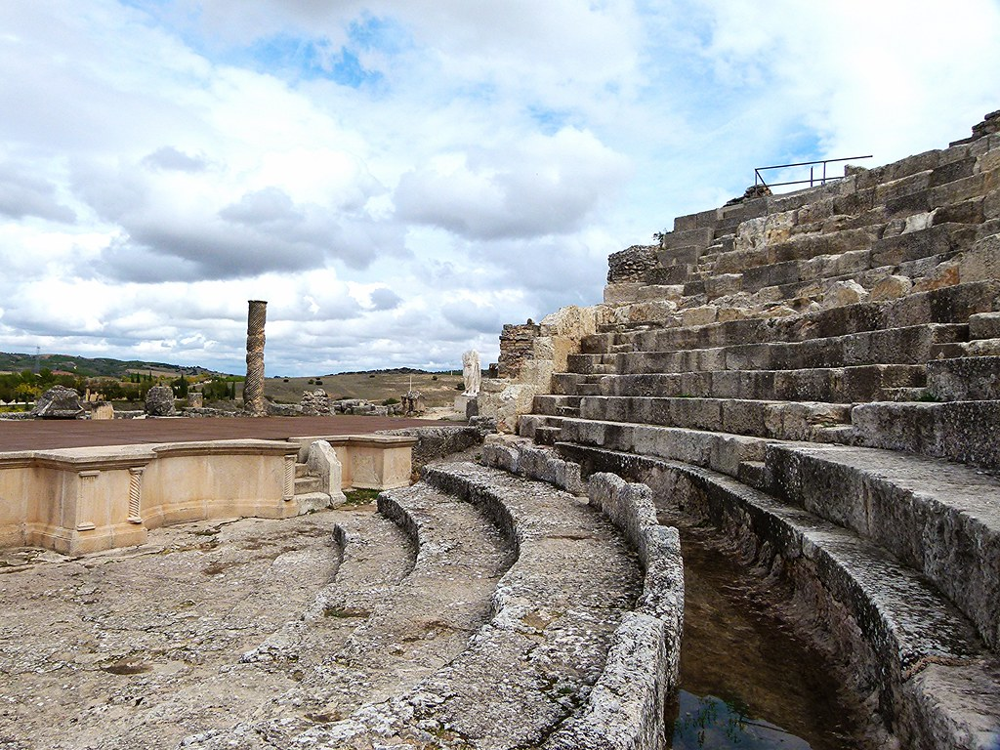
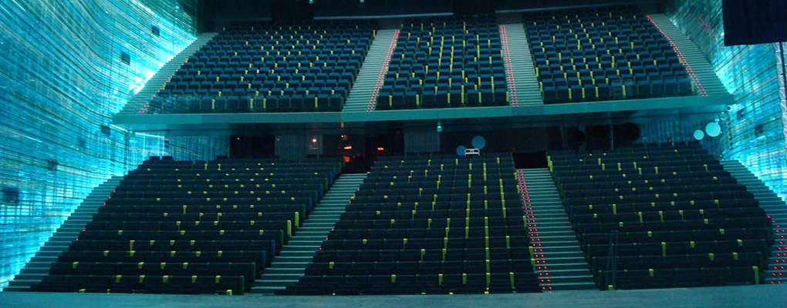

Monuments
Brief info
There are many monuments in Cartagena, the mayority part are famouse people that has a figure about himself or something related with him.
Author
Óscar Nogueira Montes DAW1
Barrio del Foro Romano de Cartagena
This is the most famouse monument in Cartagena, it is located in the south and its 200 meters near the sea. It was created between the 5 and the 1 year before Christ with a capacity for over 7000 expectators and it was in use until III century. It was discovered in 1988 for Sebastian Ramallo Asensio. Nowadays it has his own museum and its the most visited museum of Cartagena with more than 40% of the visits.
It was discovered when the construction of The Regional Center of Craft by surprise, it was fully covered so it conserved very well, the 60% of the original materials were good. The state organizate a plan of reconstruction and resoring the place in 2008 by Sebastian Ramallo Asensio. With all this, they decide it to comercialize the monument and they created a museum with guide tours to visit the teather and the structure that is part of it
Barrio del Foro Romano de Cartagena
Auditorio y palacio de congresos El Batel
This structure is located in port of the city, near the National Subnautic Arqueology Museum, it was in construction for 7 years, from 2004 to 2011, when they finaly open to the public. THe creators of this monument are the architectures Jose Selgas and Lucia Cano and they made it with a capacity of 1845 spectators.
